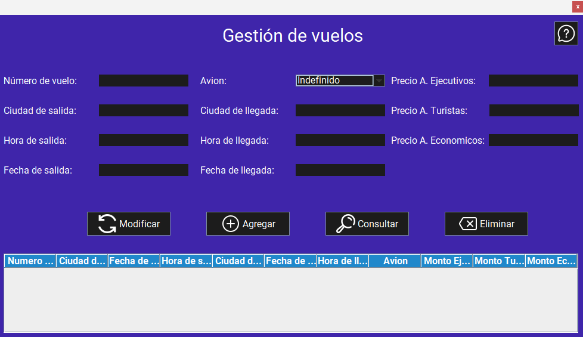
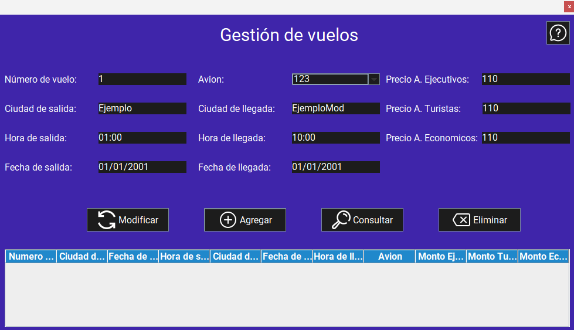
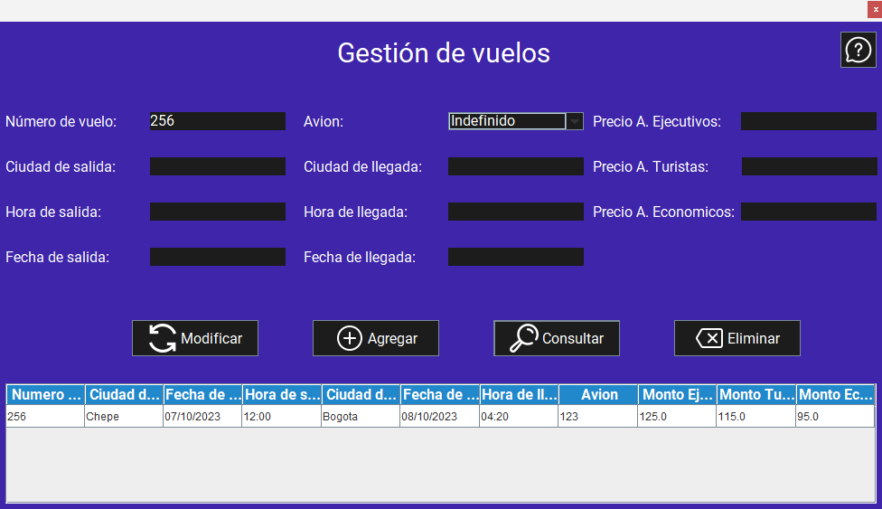

Pantalla principal:
Al iniciar la aplicación, se muestra la pantalla principal de la gestión de vuelos. Esta pantalla permite agregar, modificar y eliminar vuelos, así como consultar la lista de vuelos registrados en el sistema.
Funcionalidades:
1. Agregar un vuelo
Para agregar un vuelo, siga estos pasos:
- Inicie la aplicación.
- Ingrese los datos en cada campo de texto (Número de vuelo, ciudad de salida, hora de salida, fecha de salida, vuelo, ciudad de llegada, hora de llegada, fecha de llegada, precio asientos ejecutivos, precio asientos turistas, precios asientos economicos).
- Haga clic en el botón "Agregar". 
Advertencias
2. Consultar un vuelo
Para consultar un vuelo, siga estos pasos:
- Inicie la aplicación.
- Si desea consultar la información de todos los vuelos registrados, simplemente haga clic en el botón "Consultar".
- Si desea consultar la información de un avión específico, ingrese la matrícula del avión en el campo de texto (Número de vuelo).
- Haga clic en el botón "Consultar". 
Advertencias